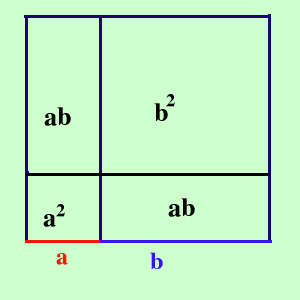

Semplice: i Greci lavoravano solo con la geometria,
quindi invece dei monomi usavano i segmenti: osserva quest'
illustrazione:

Il lato del quadrato grosso e' ottenuto sommando i due segmenti
a e b quindi vale a+b ed e' composto da un quadrato di lato a,
da un quadrato di lato b e da 2 rettangoli di area ab quindi
(a+b)2=a2+2ab+b
2
cioe'
Il quadrato di un binomio e' uguale al quadrato del primo
termine piu' il doppio del prodotto del primo per il secondo
piu' il quadrato del secondo